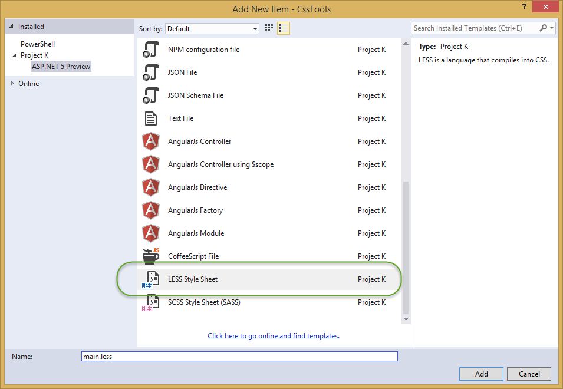
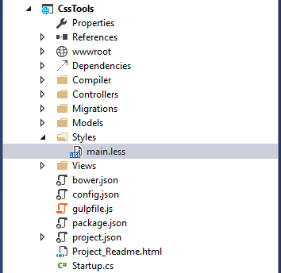
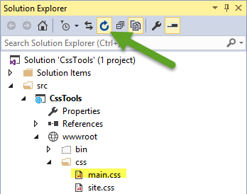
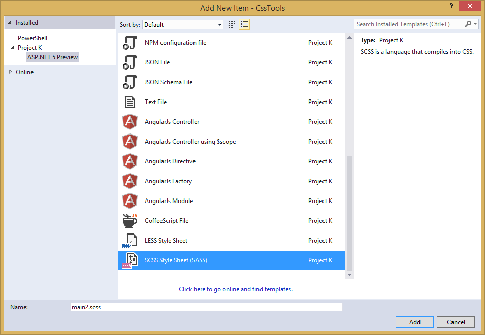
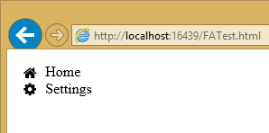

Styling Applications with Less, Sass, and Font Awesome¶
By Steve Smith
Users of web applications have increasingly high expectations when it comes to style and overall experience. Modern web applications frequently leverage rich tools and frameworks for defining and managing their look and feel in a consistent manner. Frameworks like Bootstrap can go a long way toward defining a common set of styles and layout options for the web sites. However, most non-trivial sites also benefit from being able to effectively define and maintain styles and cascading style sheet (CSS) files, as well as having easy access to non-image icons that help make the site’s interface more intuitive. That’s where languages and tools that support Less and Sass, and libraries like Font Awesome, come in.
- In this article:
CSS Preprocessor Languages¶
Languages that are compiled into other languages, in order to improve the experience of working with the underlying language, are referred to as pre-processors. There are two popular pre-processors for CSS: Less and Sass. These pre-processors add features to CSS, such as support for variables and nested rules, which improve the maintainability of large, complex stylesheets. CSS as a language is very basic, lacking support even for something as simple as variables, and this tends to make CSS files repetitive and bloated. Adding real programming language features via preprocessors can help reduce duplication and provide better organization of styling rules. Visual Studio provides built-in support for both Less and Sass, as well as extensions that can further improve the development experience when working with these languages.
As a quick example of how preprocessors can improve readability and maintainability of style information, consider this CSS:
.header {
color: black;
font-weight: bold;
font-size: 18px;
font-family: Helvetica, Arial, sans-serif;
}
.small-header {
color: black;
font-weight: bold;
font-size: 14px;
font-family: Helvetica, Arial, sans-serif;
}
Using Less, this can be rewritten to eliminate all of the duplication, using a mixin (so named because it allows you to “mix in” properties from one class or rule-set into another):
.header {
color: black;
font-weight: bold;
font-size: 18px;
font-family: Helvetica, Arial, sans-serif;
}
.small-header {
.header;
font-size: 14px;
}
Visual Studio 2015 adds a great deal of built-in support for Less and Sass. You can also add support for earlier versions of Visual Studio by installing the Web Essentials extension.
Less¶
The Less CSS pre-processor runs using Node.js. You can quickly install it using the Node Package Manager (NPM), with:
npm install -g less
If you’re using Visual Studio 2015, you can get started with Less by adding one or more Less files to your project, and then configuring Gulp (or Grunt) to process them at compile-time. Add a Styles folder to your project, and then add a new Less file called main.less to this folder.
Once added, your folder structure should look something like this:
Now we can add some basic styling to the file, which will be compiled into CSS and deployed to the wwwroot folder by Gulp.
Modify main.less to include the following content, which creates a simple color palette from a single base color.
@base: #663333;
@background: spin(@base, 180);
@lighter: lighten(spin(@base, 5), 10%);
@lighter2: lighten(spin(@base, 10), 20%);
@darker: darken(spin(@base, -5), 10%);
@darker2: darken(spin(@base, -10), 20%);
body {
background-color:@background;
}
.baseColor {color:@base}
.bgLight {color:@lighter}
.bgLight2 {color:@lighter2}
.bgDark {color:@darker}
.bgDark2 {color:@darker2}
@base and the other @-prefixed items are variables. Each of them represents a color. Except for @base, they are set using color functions: lighten, darken, and spin. Lighten and darken do pretty much what you would expect; spin adjusts the hue of a color by a number of degrees (around the color wheel). The less processor is smart enough to ignore variables that aren’t used, so to demonstrate how these variables work, we need to use them somewhere. The classes .baseColor, etc. will demonstrate the calculated values of each of the variables in the CSS file that is produced.
Getting Started¶
If you don’t already have one in your project, add a new Gulp configuration file. Make sure package.json includes gulp in its devDependencies, and add “gulp-less”:
"devDependencies": {
"gulp": "3.8.11",
"gulp-less": "3.0.2",
"rimraf": "2.3.2"
}
Save your changes to the package.json file, and you should see that the all of the files referenced can be found in the Dependencies folder under NPM. If not, right-click on the NPM folder and select “Restore Packages.”
Now open gulpfile.js. Add a variable at the top to represent less:
var gulp = require("gulp"),
rimraf = require("rimraf"),
fx = require("fs"),
less = require("gulp-less");
add another variable to allow you to access project properties:
var project = require('./project.json');
Next, add a task to run less, using the syntax shown here:
gulp.task("less", function () {
return gulp.src('Styles/main.less')
.pipe(less())
.pipe(gulp.dest(project.webroot + '/css'))
});
Open the Task Runner Explorer (view>Other Windows > Task Runner Explorer). Among the tasks, you should see a new task named less. Run it, and you should have output similar to what is shown here:
Now refresh your Solution Explorer and inspect the contents of the wwwroot/css folder. You should find a new file, main.css, there:
Open main.css and you should see something like the following:
body {
background-color: #336666;
}
.baseColor {
color: #663333;
}
.bgLight {
color: #884a44;
}
.bgLight2 {
color: #aa6355;
}
.bgDark {
color: #442225;
}
.bgDark2 {
color: #221114;
}
Add a simple HTML page to the wwwroot folder and reference main.css to see the color palette in action.
<!DOCTYPE html>
<html>
<head>
<meta charset="utf-8" />
<link href="css/main.css" rel="stylesheet" />
<title></title>
</head>
<body>
<div>
<div class="baseColor">BaseColor</div>
<div class="bgLight">Light</div>
<div class="bgLight2">Light2</div>
<div class="bgDark">Dark</div>
<div class="bgDark2">Dark2</div>
</div>
</body>
</html>
You can see that the 180 degree spin on @base used to produce @background resulted in the color wheel opposing color of @base:
Less also provides support for nested rules, as well as nested media queries. For example, defining nested hierarchies like menus can result in verbose CSS rules like these:
nav {
height: 40px;
width: 100%;
}
nav li {
height: 38px;
width: 100px;
}
nav li a:link {
color: #000;
text-decoration: none;
}
nav li a:visited {
text-decoration: none;
color: #CC3333;
}
nav li a:hover {
text-decoration: underline;
font-weight: bold;
}
nav li a:active {
text-decoration: underline;
}
Ideally all of the related style rules will be placed together within the CSS file, but in practice there is nothing enforcing this rule except convention and perhaps block comments.
Defining these same rules using Less looks like this:
nav {
height: 40px;
width: 100%;
li {
height: 38px;
width: 100px;
a {
color: #000;
&:link { text-decoration:none}
&:visited { color: #CC3333; text-decoration:none}
&:hover { text-decoration:underline; font-weight:bold}
&:active {text-decoration:underline}
}
}
}
Note that in this case, all of the subordinate elements of nav are contained within its scope. There is no longer any repetition of parent elements (nav, li, a), and the total line count has dropped as well (though some of that is a result of putting values on the same lines in the second example). It can be very helpful, organizationally, to see all of the rules for a given UI element within an explicitly bounded scope, in this case set off from the rest of the file by curly braces.
The & syntax is a Less selector feature, with & representing the current selector parent. So, within the a {...} block, & represents an a tag, and thus &:link is equivalent to a:link.
Media queries, extremely useful in creating responsive designs, can also contribute heavily to repetition and complexity in CSS. Less allows media queries to be nested within classes, so that the entire class definition doesn’t need to be repeated within different top-level @media elements. For example, this CSS for a responsive menu:
.navigation {
margin-top: 30%;
width: 100%;
}
@media screen and (min-width: 40em) {
.navigation {
margin: 0;
}
}
@media screen and (min-width: 62em) {
.navigation {
width: 960px;
margin: 0;
}
}
This can be better defined in Less as:
.navigation {
margin-top: 30%;
width: 100%;
@media screen and (min-width: 40em) {
margin: 0;
}
@media screen and (min-width: 62em) {
width: 960px;
margin: 0;
}
}
Another feature of Less that we have already seen is its support for mathematical operations, allowing style attributes to be constructed from pre-defined variables. This makes updating related styles much easier, since the base variable can be modified and all dependent values change automatically.
CSS files, especially for large sites (and especially if media queries are being used), tend to get quite large over time, making working with them unwieldy. Less files can be defined separately, then pulled together using @import directives. Less can also be used to import individual CSS files, as well, if desired.
Mixins can accept parameters, and Less supports conditional logic in the form of mixin guards, which provide a declarative way to define when certain mixins take effect. A common use for mixin guards is to adjust colors based on how light or dark the source color is. Given a mixin that accepts a parameter for color, a mixin guard can be used to modify the mixin based on that color:
.box (@color) when (lightness(@color) >= 50%) {
background-color: #000;
}
.box (@color) when (lightness(@color) < 50%) {
background-color: #FFF;
}
.box (@color) {
color: @color;
}
.feature {
.box (@base);
}
Given our current @base value of #663333, this Less script will produce the following CSS:
.feature {
background-color: #FFF;
color: #663333;
}
Less provides a number of additional features, but this should give you some idea of the power of this preprocessing language.
Sass¶
Sass is similar to Less, providing support for many of the same features, but with slightly different syntax. It is built using Ruby, rather than JavaScript, and so has different setup requirements. The original Sass language did not use curly braces or semicolons, but instead defined scope using white space and indentation. In version 3 of Sass, a new syntax was introduced, SCSS (“Sassy CSS”). SCSS is similar to CSS in that it ignores indentation levels and whitespace, and instead uses semicolons and curly braces.
To install Sass, typically you would first install Ruby (pre-installed on Mac), and then run:
gem install sass-lang
However, assuming you’re running Visual Studio, you can get started with Sass in much the same way as you would with Less. Open package.json and add the “gulp-sass” package to devDependencies:
"devDependencies": {
"gulp": "3.8.11",
"gulp-less": "3.0.2",
"gulp-sass": "1.3.3",
"rimraf": "2.3.2"
}
Next, modify gulpfile.js to add a sass variable and a task to compile your Sass files and place the results in the wwwroot folder:
var gulp = require("gulp"),
rimraf = require("rimraf"),
fs = require("fs"),
less = require("gulp-less"),
sass = require("gulp-sass");
// other content removed
gulp.task("sass", function () {
return gulp.src('Styles/main2.scss')
.pipe(sass())
.pipe(gulp.dest(project.webroot + '/css'))
});
Now you can add the Sass file main2.scss to the Styles folder in the root of the project:
Open main2.scss and add the following:
$base: #CC0000;
body {
background-color: $base;
}
Save all of your files. Now in Task Runner Explorer, you should see a sass task. Run it, refresh solution explorer, and look in the /wwwroot/css folder. There should be a main2.css file, with these contents:
body {
background-color: #CC0000; }
Sass supports nesting in much the same was that Less does, providing similar benefits. Files can be split up by function and included using the @import directive:
@import 'anotherfile';
Sass supports mixins as well, using the @mixin keyword to define them and @include to include them, as in this example from sass-lang.com:
@mixin border-radius($radius) {
-webkit-border-radius: $radius;
-moz-border-radius: $radius;
-ms-border-radius: $radius;
border-radius: $radius;
}
.box { @include border-radius(10px); }
In addition to mixins, Sass also supports the concept of inheritance, allowing one class to extend another. It’s conceptually similar to a mixin, but results in less CSS code. It’s accomplished using the @extend keyword. First, let’s see how we might use mixins, and the resulting CSS code. Add the following to your main2.scss file:
@mixin alert {
border: 1px solid black;
padding: 5px;
color: #333333;
}
.success {
@include alert;
border-color: green;
}
.error {
@include alert;
color: red;
border-color: red;
font-weight:bold;
}
Examine the output in main2.css after running the sass task in Task Runner Explorer:
.success {
border: 1px solid black;
padding: 5px;
color: #333333;
border-color: green;
}
.error {
border: 1px solid black;
padding: 5px;
color: #333333;
color: red;
border-color: red;
font-weight: bold;
}
Notice that all of the common properties of the alert mixin are repeated in each class. The mixin did a good job of helping use eliminate duplication at development time, but it’s still creating CSS with a lot of duplication in it, resulting in larger than necessary CSS files - a potential performance issue. It would be great if we could follow the Don’t Repeat Yourself (DRY) Principle at both development time and runtime.
Now replace the alert mixin with a .alert class, and change @include to @extend (remembering to extend .alert, not alert):
.alert {
border: 1px solid black;
padding: 5px;
color: #333333;
}
.success {
@extend .alert;
border-color: green;
}
.error {
@extend .alert;
color: red;
border-color: red;
font-weight:bold;
}
Run Sass once more, and examine the resulting CSS:
.alert, .success, .error {
border: 1px solid black;
padding: 5px;
color: #333333; }
.success {
border-color: green; }
.error {
color: red;
border-color: red;
font-weight: bold; }
Now the properties are defined only as many times as needed, and better CSS is generated.
Sass also includes functions and conditional logic operations, similar to Less. In fact, the two languages’ capabilities are very similar.
Less or Sass?¶
There is still no consensus as to whether it’s generally better to use Less or Sass (or even whether to prefer the original Sass or the newer SCSS syntax within Sass). A recent poll conducted on twitter of mostly ASP.NET developers found that the majority preferred to use Less, by about a 2-to-1 margin. Probably the most important decision is to use one of these tools, as opposed to just hand-coding your CSS files. Once you’ve made that decision, both Less and Sass are good choices.
Font Awesome¶
In addition to CSS pre-compilers, another great resource for styling modern web applications is Font Awesome. Font Awesome is a toolkit that provides over 500 scalable vector icons that can be freely used in your web applications. It was originally designed to work with Bootstrap, but has no dependency on that framework, or on any JavaScript libraries.
The easiest way to get started with Font Awesome is to add a reference to it, using its public content delivery network (CDN) location:
<link rel="stylesheet"
href="//maxcdn.bootstrapcdn.com/font-awesome/4.3.0/css/font-awesome.min.css">
Of course, you can also quickly add it to your Visual Studio 2015 project by adding it to the “dependencies” in bower.json:
{
"name": "ASP.NET",
"private": true,
"dependencies": {
"bootstrap": "3.0.0",
"jquery": "1.10.2",
"jquery-validation": "1.11.1",
"jquery-validation-unobtrusive": "3.2.2",
"hammer.js": "2.0.4",
"bootstrap-touch-carousel": "0.8.0",
"Font-Awesome": "4.3.0"
}
}
Then, to get the stylesheet added to the wwwroot folder, modify gulpfile.js as follows:
gulp.task("copy", ["clean"], function () {
var bower = {
"angular": "angular/angular*.{js,map}",
"bootstrap": "bootstrap/dist/**/*.{js,map,css,ttf,svg,woff,eot}",
"bootstrap-touch-carousel": "bootstrap-touch-carousel/dist/**/*.{js,css}",
"hammer.js": "hammer.js/hammer*.{js,map}",
"jquery": "jquery/jquery*.{js,map}",
"jquery-validation": "jquery-validation/jquery.validate.js",
"jquery-validation-unobtrusive": "jquery-validation-unobtrusive/jquery.validate.unobtrusive.js",
"font-awesome": "Font-Awesome/**/*.{css,otf,eot,svg,ttf,woff,wof2}"
};
for (var destinationDir in bower) {
gulp.src(paths.bower + bower[destinationDir])
.pipe(gulp.dest(paths.lib + destinationDir));
}
});
Once this is in place (and saved), running the ‘copy’ task in Task Runner Explorer should copy the font awesome fonts and css files to /lib/font-awesome.
Once you have a reference to it on a page, you can add icons to your application by simply applying Font Awesome classes, typically prefixed with “fa-”, to your inline HTML elements (such as <span> or <i>). As a very simple example, you can add icons to simple lists and menus using code like this:
<!DOCTYPE html>
<html>
<head>
<meta charset="utf-8" />
<title></title>
<link href="lib/font-awesome/css/font-awesome.css" rel="stylesheet" />
</head>
<body>
<ul class="fa-ul">
<li><i class="fa fa-li fa-home"></i> Home</li>
<li><i class="fa fa-li fa-cog"></i> Settings</li>
</ul>
</body>
</html>
This produces the following in the browser - note the icon beside each item:
You can view a complete list of the available icons here:
Summary¶
Modern web applications increasingly demand responsive, fluid designs that are clean, intuitive, and easy to use from a variety of devices. Managing the complexity of the CSS stylesheets required to achieve these goals is best done using a pre-processor like Less or Sass. In addition, toolkits like Font Awesome quickly provide well-known icons to textual navigation menus and buttons, improving the overall user experience of your application.